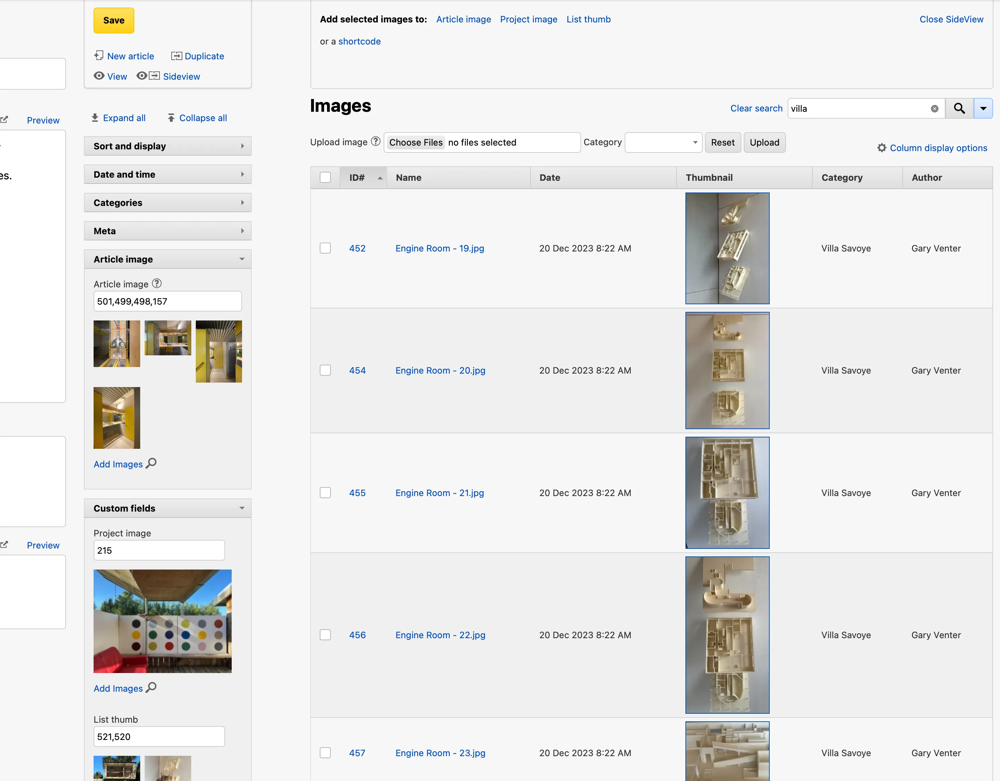

A plugin for Textpattern
Write panel, find and add images to the Article Image field or any specified custom field.Images panel opens in a SideView, providing full upload, edit and search capabilities.shortcodes for insertion into any textarea.images/ directoryIf using Textpattern 4.9+, upload the all_pic.zip file using the installer in the Plugins tab.
For older versions of Textpattern, upload an unzipped version to your plugins folder using ftp, and then Load from drive in the Plugins tab.
Once installed, activate the plugin, then visit the Write panel. You’ll find an Add images link below the Article image field (and any other custom fields if you’ve added them in all_pic preferences).
Visit allPic in the Preferences tab.
#article-image field only, but you can add others separated by commas eg. #article-image, #custom-1, #custom-3 etc./> tag eg. <txp::gallery or <txp::my_shortcode phew="bar" etc. .Click on a Add images link; the Images panel will display in SideView.
Article image (or any other custom field) in the side view headerThe image thumbs will display below their respective field:
Image edit panel will open in side view.Add selected images to your shortcode by clicking the shortcode link in the SideView header. This will add image ids to the shortcode, with thumb previews you can drag to reorder. When you’re ready, copy (or drag) the shortcode into your Body field.
If you have not created a form with the same name as your shortcode, Textpattern will ignore it.
Example shortcode <txp::gallery id="1,2,3" />
Create a form called gallery.txp in Presentation: Forms:
<txp:images id='<txp:yield name="id" />' break="" wraptag="div" class="gallery">
<figure>
<img src="<txp:image_url />" alt="<txp:image_info type="name" />"" />
<txp:evaluate><txp:image_info escape="textile" wraptag="figcaption" /></txp:evaluate>
</figure>
</txp:images>Paste the shortcode into an article body field, Save and click View. Without any css to control the layout, your images will display one above the other.
To add layout, include the following to your site’s css:
.gallery {
display: grid;
gap: 1rem;
grid-template-columns: repeat(auto-fit, minmax(300px,1fr));
/* assumes max-width is not already specified in your css */
img { max-width: 100%;}
}The images will distribute in rows depending on the width of the gallery. The same shortcode can be used in your form template:
<txp:if_article_image>
<txp::gallery id='<txp:custom_field name="article-image" />' />
</txp:if_article_image>